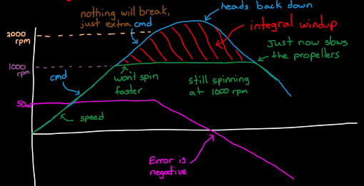
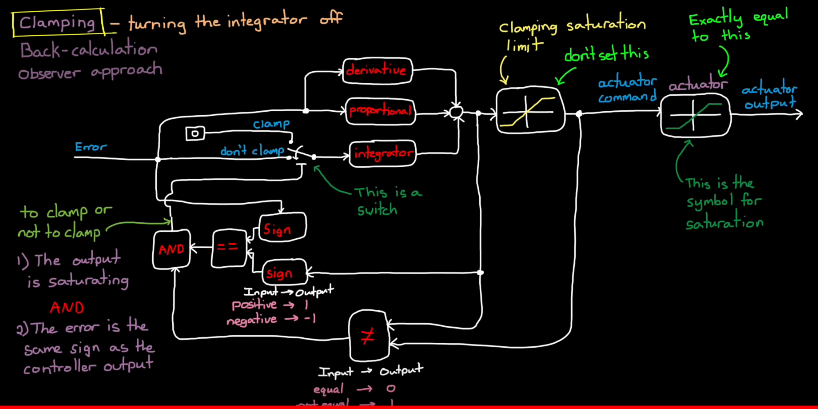
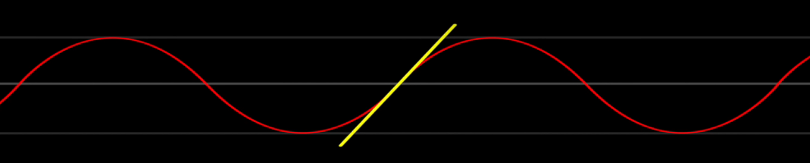
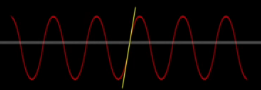
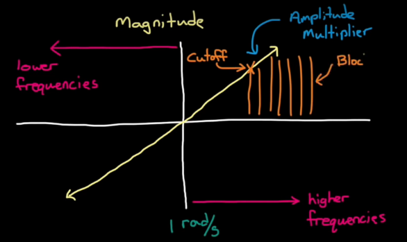
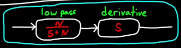
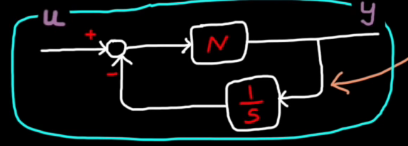
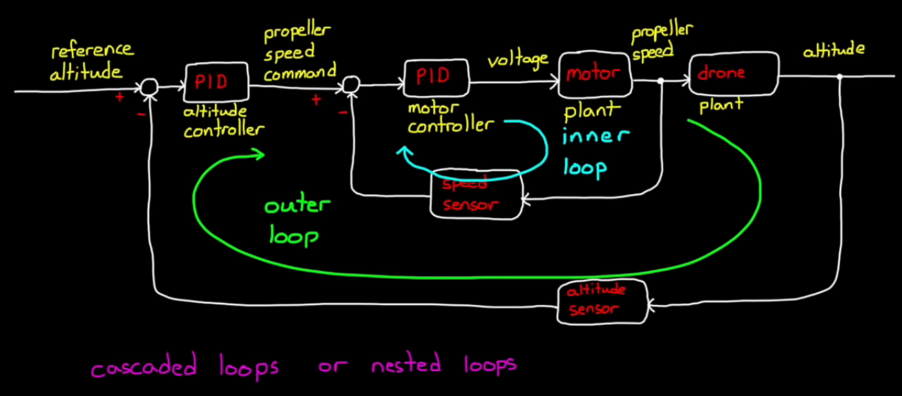

When the actuator saturates, (e.g. when the actuator can't follow a given commend)
Integral windup occurs!
Because the integrator keeps adding up the error during saturation period, the actuator signal can't decrease as soon as the error switch signs.

Integrator anti-windup method: actuator signal can decrease as soon as the error switch signs.
Clamping - turing the integrator off (conditional integrator): add a turnoff switch before the integrator, which is trggerd bt AND logic of 2 check paths.
1 path - Check if the output is saturating. (by setting a clamping saturation limit block)
2 path - Check if the error is the same sign as the controller output
(Note: set controller saturation limit "lower" than real actuator limit)

Noise is unavoidable to sensors. Measure state = True State + noise.
Derivative controller could magnify the amplitude of the tiny noise, and impact our system.


We can apply a filter that will block frequencies above a certain point from entering our derivative. (the certain point of freqeuncy: cutoff frequency).
Add a 1st order low pas filter before the Derivative controller: Wcut/(s+Wcut)
(Magnitude of Noise v.s. Frequency plot)

Sometime we implement the controller in code in another form, to increase the efficieny, reduce the memory usage.
Another form of low-pass filter + derivative is: An integral in the feed back path.


To get the inital guess of the PID gains, we can use 2 methods.
1. Pole placement: use root locus, so that the closed-loop poles meet the requirement.
2. Loop Shaping: shape the open-loop bode plot, to get the required closd-loop freqeuncy characteristic.
After tuning the PID gains, make sure to check the controller output signal: u, so that the cmd is appropriate.(e.g. not to high over the max. limit of the physical model.)
Add clamping to the PID controller (to deal with saturation problem).
Take drone altitude control for example. At the outer loop, we have one altitude PID to control the propeller (input: reference altitude, output: propeller speed cmd). Meanwhile, the propeller also has a inner PID to control the motor speed (input: propeller speed cmd, ouput: voltage cmd to the motor).
These are cascaded loops or nested loops. The outer loop drives the set point of the inner loop, and the inner loop affects the feedback path of the outer loop.

Why cascaded loops? (e.g. why not design a single PID to controller the cmd motor voltage directly? [input: reference altitude, output: cmd motor voltage])
1. easier to isolate problems.
2. can distribute work to multiple teams. (e.g. the motor you buy might have a built-in contoller)
3. can address different source of disturbance, noise, or error.
- The inner loop can be tuned to respond quickly to local disturbances
- The outer loop can be tuned more conservatively to reject sensor noise and increase stability
(e.g. let's say we have a sudden voltage drop in the motor. If the inner loop PID is fast enough to respond and recover the motor speed, then the motor distances would no be seen by the outer loop. This allows the outer loop to respond only to slow disturbances like wind gust.
If we have only a single loop, then the single PID has to sense that tiny change of altitude due to sudden voltage drop. But it will also quickly respond to altitude sensor noise!)
How to tune them?
Case 1. If the inner loop is much faster than the outer loop (bandwith 5-7 times higher):
possible to tune them separately.
(e.g. Tune the motor PID first, and make sure the propeller speed quickly follows the propeller speed cmd.
To tune the outer loop, we can assume that the inner loop doesn't exist, and that the cmd of propeller speed just goes straight through.)
In this way, you are actually tuning two single loops.
Case 2. If the inner loop operates about the same bandwith as the outer loop:
We can't assume that the inner loop is fast enough to be instantaneous. Now the inner loop performance does affect the outer loop.
To tune this system, we can use iterative method, state space method, or autotune tools.